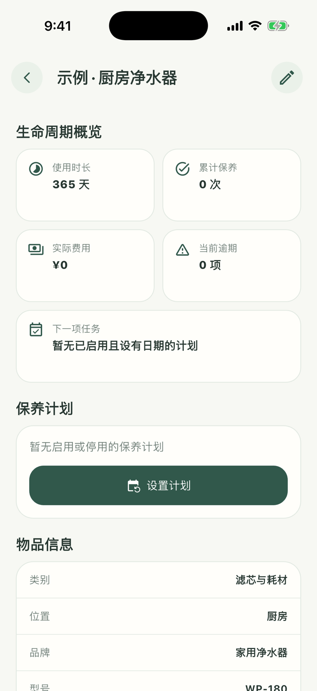
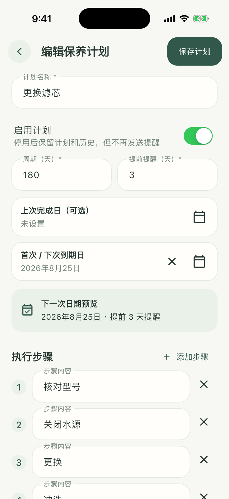

02 · 让保养有周期、有步骤
建立保养计划
以净水器的“更换滤芯”为例，把保养名称、周期、下次日期、提前提醒和执行步骤一次设置清楚。


- 1
进入计划编辑
打开物品详情，在“保养计划”区域点击“设置计划”，再选择“添加计划”。
- 2
确定周期和日期
填写保养周期，并设置上次完成日期或下一次日期。页面会给出下一次保养预览。
- 3
设置提醒
填写提前提醒天数。只有开启通知权限后才会收到本机提醒，拒绝通知不会影响计划保存。
- 4
整理执行步骤
保留适用的模板步骤，按实际设备修改、增加或删除，再保存计划。